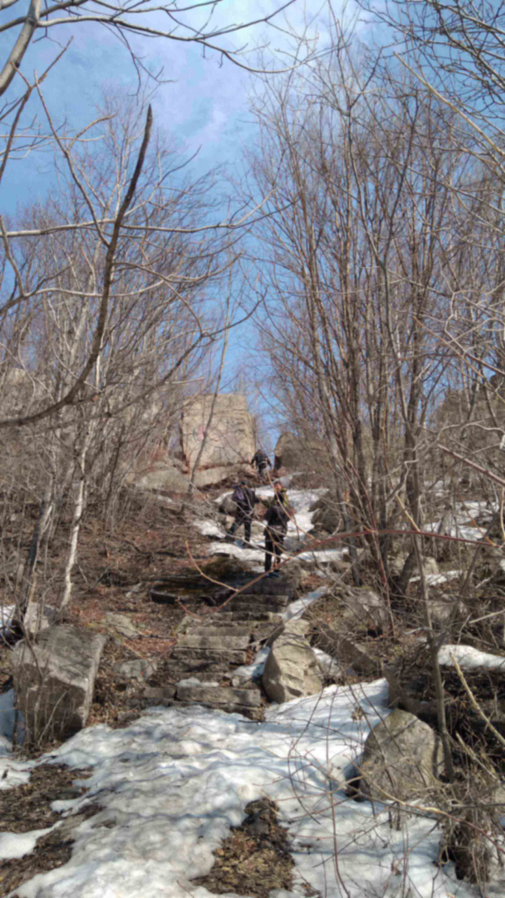
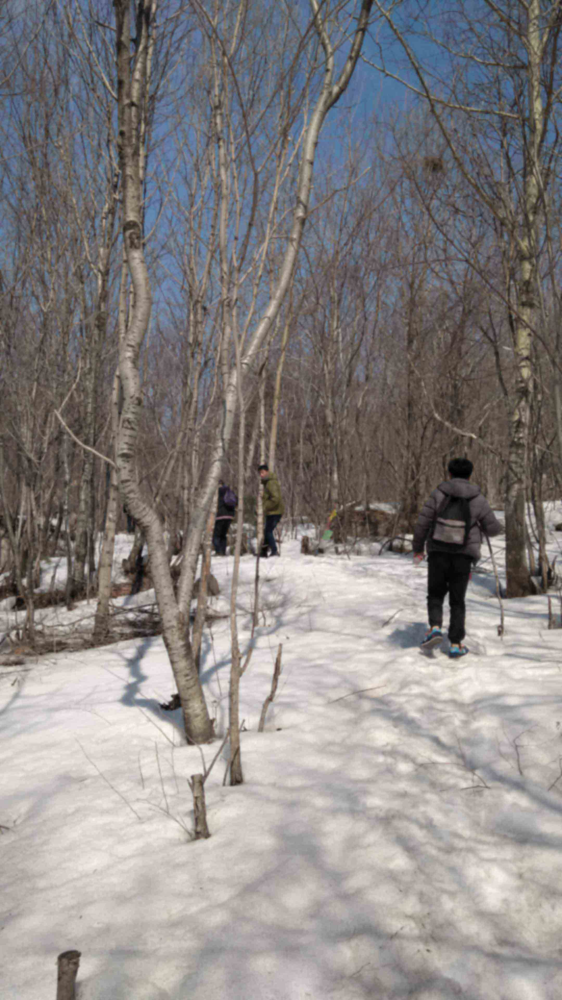
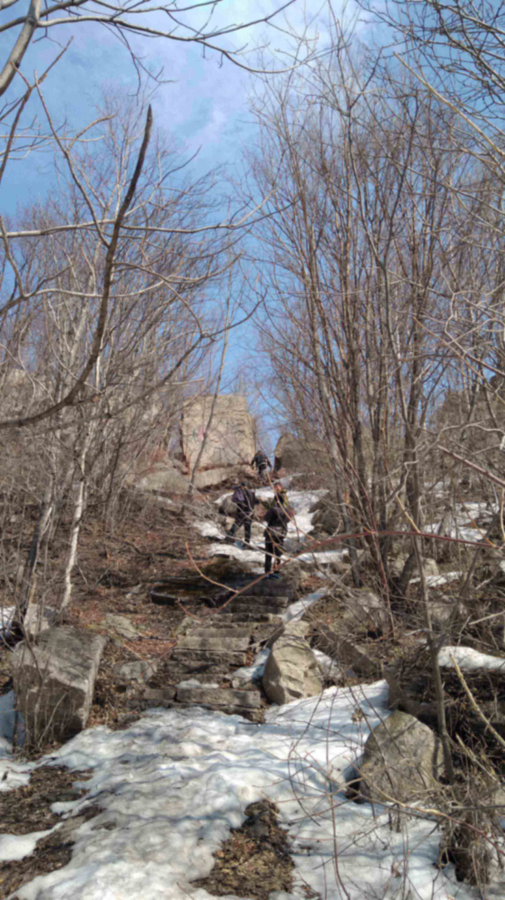
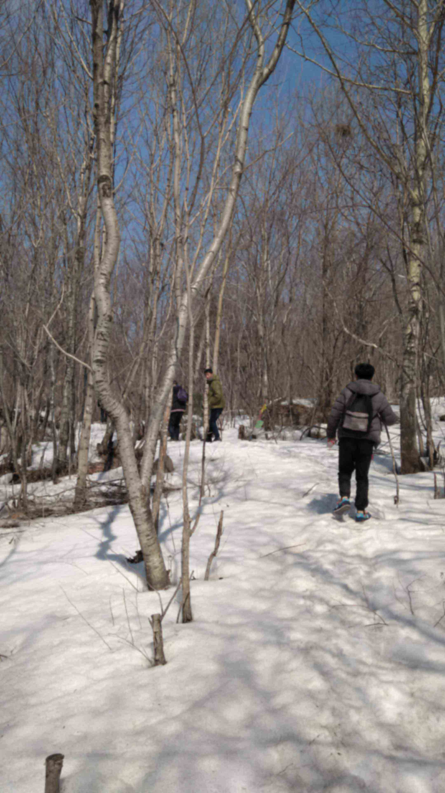

牡丹江
-
发现牡丹江的美女数量比哈尔滨的还要多嘢...
昨晚回到酒店洗了鞋子，洗了澡，就睡觉了。。。
嗨呀，今天来到牡丹峰，坐公交车要1个小时左右到达，不用门票...
------------------------------------------------------------少不入川
上传者：招君 日期：2017.4.3 地点：牡丹江
-
-------------------------------------------------------------------------Don't allow fear of failure to stop you.
横道河子
-
这一天，很梦幻
很累很累
罗总说，不枉此行！~
-------------------------------------少不入川
上传者：招君 日期：2017.4.2 地点：黑龙江横道河子
-
早上来到横道河子，天气很冷，在镇子上走了走，就赶紧找了一个早餐店进去暖暖身子，饱饱肚子~
我们尝试着自己去沿着传说中的仙境前去佛手山点击下面按钮播放视频
但是走到10分钟的时候，大雪封路，实在难以走上去了。。。只好返程~
我们来到圣教堂，等了半个小时，终于等到大爷过来开门~（当地人很热情，告知看门大爷去串门了，等下就来~）在教堂外面，感受阳光洒在身上的暖和~感觉阳光被我们玩坏了。。。。
漫步在俄罗斯风情街，廖无人烟的景象让人嘘唏。。。。与右图中央大街对比一下....
早上9点，来到传说中的机车库
早上10点，向佛手山进攻，山路很陡峭，估计有70°的斜坡了？
兜兜转转爬到佛手山山顶,山顶没有平台，只是岩石堆积起来的石堆
 时间才来到了早上11点，正当我们正愁在下午4点半的火车去牡丹江之前没事干的时候，有三位驴友说要去探险，吓得罗总急忙说：我们也去！！！点击下面按钮播放视频
时间才来到了早上11点，正当我们正愁在下午4点半的火车去牡丹江之前没事干的时候，有三位驴友说要去探险，吓得罗总急忙说：我们也去！！！点击下面按钮播放视频
地上积雪起码20cm了，寸步难行，只能走在他们后面，踩着他们走过的脚印，那儿的雪地，以至于不会脚塌下去

 

走了一个多小时，驴友发现走错路了，无奈还是要一直往前走点击下面按钮播放视频


走了一个多小时，驴友发现走错路了，无奈还是要一直往前走点击下面按钮播放视频
终于走出雪山了，历时超过3个小时，太累了，鞋子全湿了！点击下面按钮播放视频
-----------------------------------------------------------------------------------Don't allow fear of failure to stop you.
看了一场电影
-
由于是凌晨2点的火车去横道河子
所以晚上7点半在中央大街玩到了8点半~
去吃点东西，9点半去看一场电影，到12点半步行去哈站坐火车~
-----------------------------------少不入川
上传者：招君 日期：2017.4.1 地点：中央大街
游历的计划
-
太兴奋了，都忘记说游历计划了
我跟罗总计划清明节从哈尔滨到横道河子玩一天
晚上坐火车去牡丹江市区留宿并游玩2天，共预计350元
----------------------------------------------------少不入川
上传者：招君 日期：2017.4.1 地点：中央大街
中央大街
-
带了一件毛衣，穿着大衣，背上书包，就此出发
同行有你，愉快...
-----------------------------------少不入川
上传者：招君 日期：2017.4.1 地点：中央大街
-
按捺不住要出发前往横道河子的心情了...
-
第一次跟罗总游历...
不知道会遇到哪些人和物。。。
喜欢这种不明确的美
我一定会enjoy这次游历的....
------------------------------少不入川
上传者：招君 日期：2017.3.31 地点：哈商大A区11公寓626